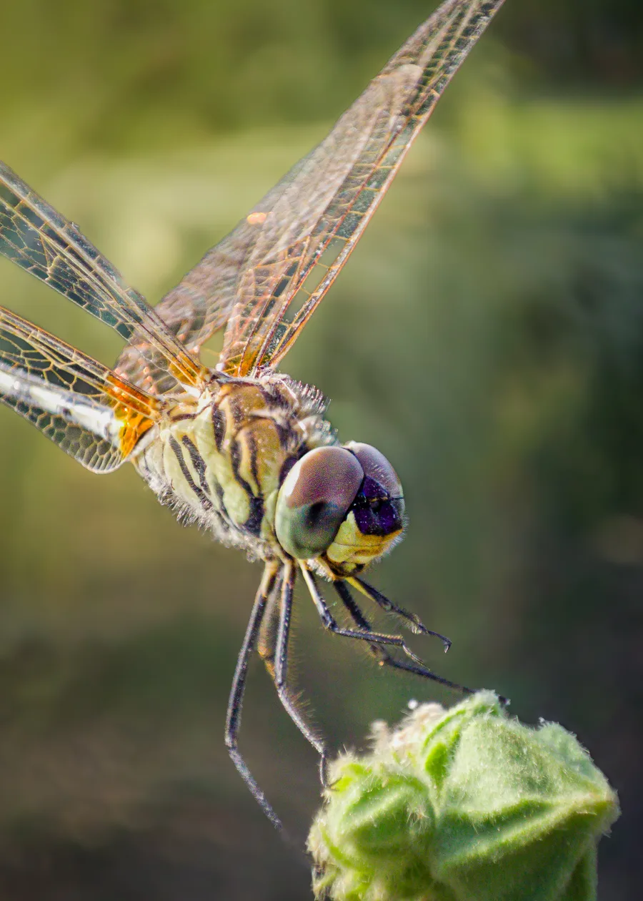
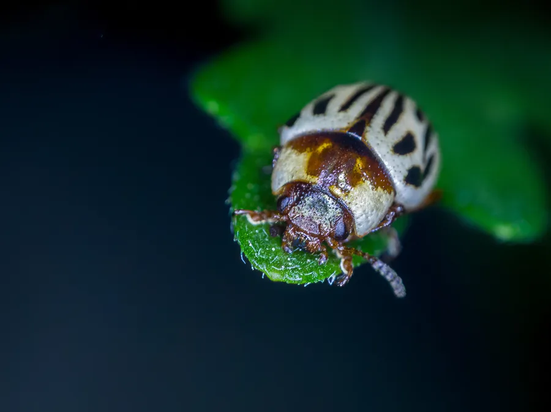

At three times life-size magnification (3:1), the physical world obeys different optical laws. Depth of field shrinks to less than a fraction of a millimeter. Even the faint pulse of your fingertips or the gentlest morning breeze across a blade of grass will throw an entire subject out of focus.
1. The Geometry of Natural Dew & Temperature
Insects are ectothermic creatures. In the early hours before the sunrise warms their bodies, they remain in a state of torpor. This natural behavioral window allows for multi-shot manual focus bracketing without causing stress, disturbance, or requiring artificial cooling methods (which I strictly oppose on ethical grounds).
During these golden 45 minutes, heavy dew clings to the micro-setae of bee antennae and dragonfly compound eyes. These microscopic water droplets act as miniature convex optical elements, catching and scattering ambient sky light.
2. Handheld vs. Rail Stacking in Dense Vegetation
While studio macro rigs allow micrometer-stepped automated electronic rails, field work in Indian woodland trails requires mobility. My primary field setup relies on a modified carbon monopod with a fluid head and a specialized twin-flash bracket wrapped in three layers of ripstop nylon diffusion.


3. Aligning and Blending the Stack
Once back in the digital darkroom, between 18 and 45 raw frames are aligned in Zerene Stacker using a hybrid PMax and DMax method. Retouching is kept purely to dust and sensor artifact removal; the coloration and lighting remain 100% true to the field encounter.